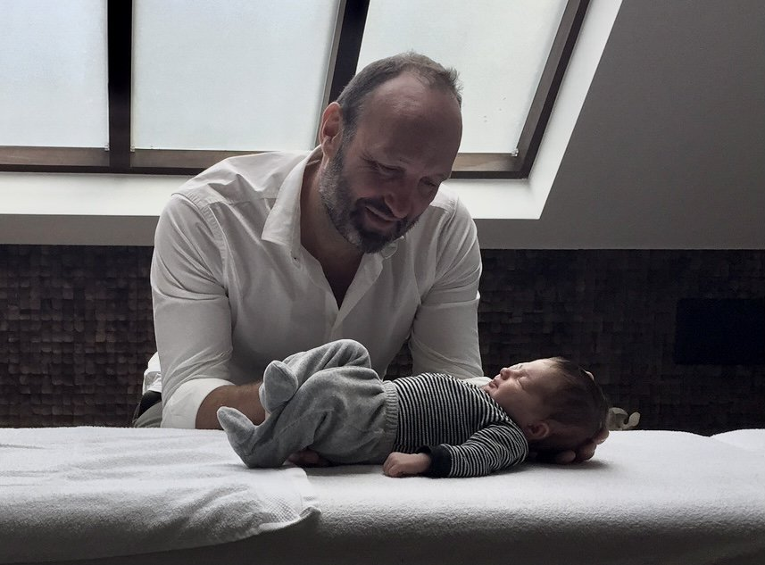
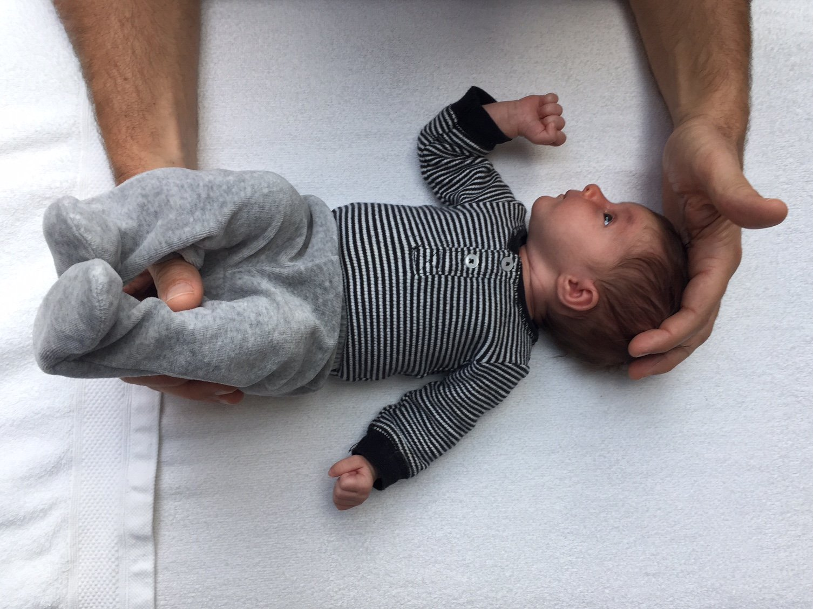
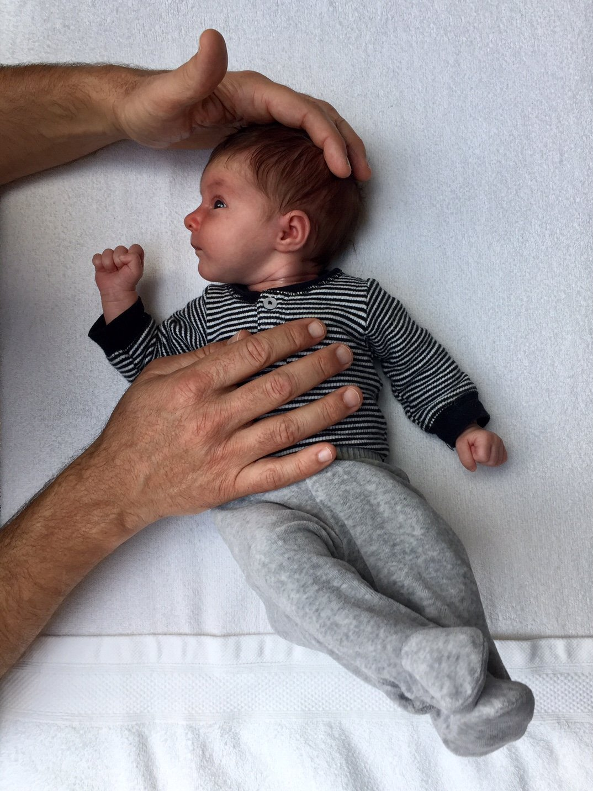
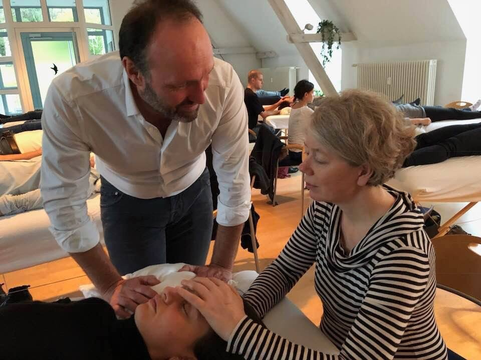
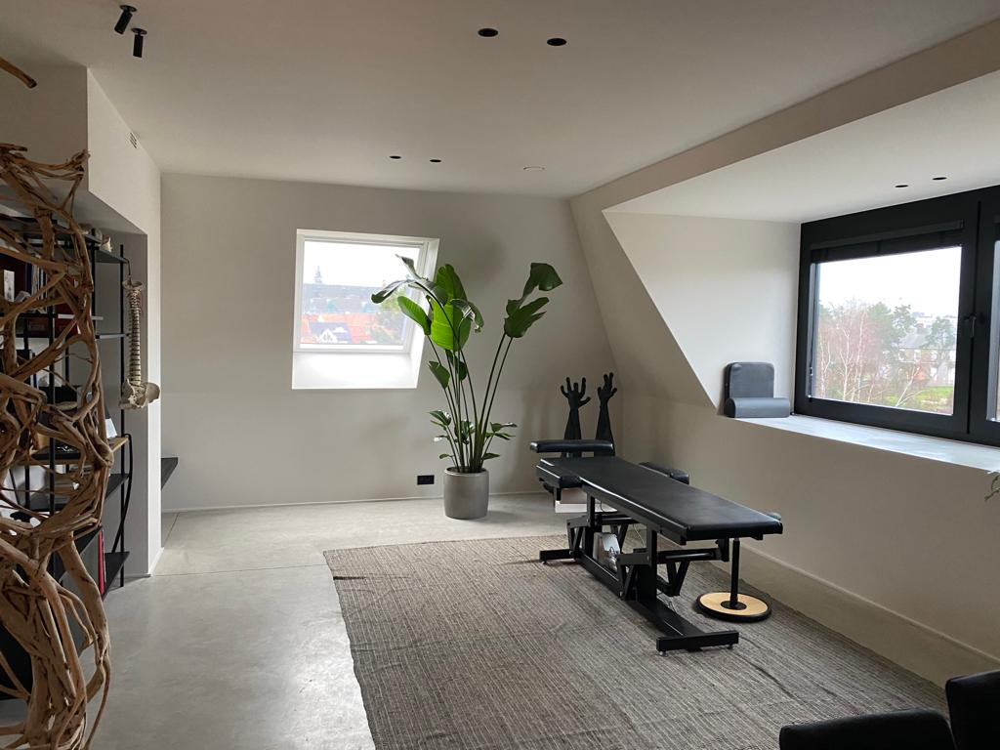
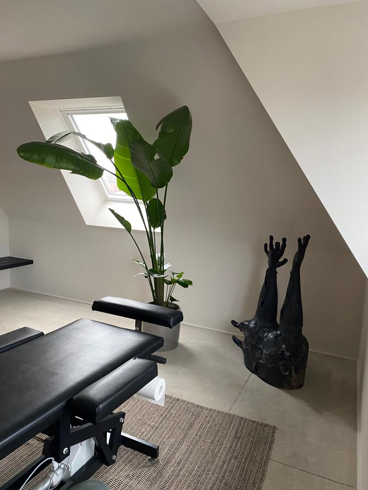
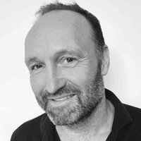

Baby's
Reflux · kolieken · voorkeurshouding
Praktijk van Tom De Lille — D.O. sinds 1995, internationaal docent in de cranio-sacrale benadering. Voor baby's, kinderen en volwassenen, op één rustig adres aan zee.

Osteopathie behandelt geen klacht — ze behandelt iemand. Met klacht. Een zere rug, een baby die niet wil drinken, een hoofd dat al weken niet meer leeg is: het zijn signalen, geen oorzaken.
We nemen de tijd om te luisteren. Naar wat u vertelt, naar wat uw lichaam vertelt. Pas dan begint het werk met de handen — zacht, gericht, en steeds in dialoog met wat het lichaam bereid is los te laten.
Sinds 1995 osteopaat in Knokke. Een praktijk die meegroeide met haar patiënten — ouders, hun kinderen, soms zelfs hun kleinkinderen.
Bestuurslid van internationale opleidingsorganisaties — IEOS, EurOCA, SCTF-Be — en docent voor collega-osteopaten in heel Europa.
Van pasgeboren baby tot grootouder. Elke leeftijd vraagt een eigen aanpak: zacht waar dat moet, gericht waar dat kan.
Mensen kloppen om uiteenlopende redenen aan. Hieronder de doelgroepen die het vaakst de praktijk vinden.

Reflux · kolieken · voorkeurshouding

Hoofdpijn · houding · orthodontie

Rug · nek · stress · na operatie
Bekken · rug · voor & na

Blessurepreventie · herstel

De specialiteit van de praktijk

Na een licentiaat kinesitherapie aan de KU Leuven (1989) volgde de vijfjarige opleiding tot osteopaat aan het COOC. De D.O.-titel kwam in 1995 — sindsdien combineert Tom een drukke praktijk in Knokke met internationale lesopdrachten in de cranio-sacrale osteopathie.
Niet de techniek bepaalt het resultaat — wel de juistheid van de diagnose en de aandacht die in elke aanraking gaat zitten.
Helmweg 14 · 8300 Knokke-Heist. Telefonisch op 050 62 15 67 of via delille.tom@gmail.com.